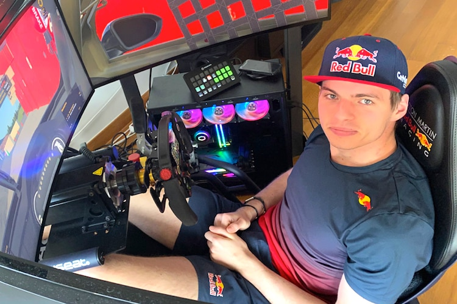
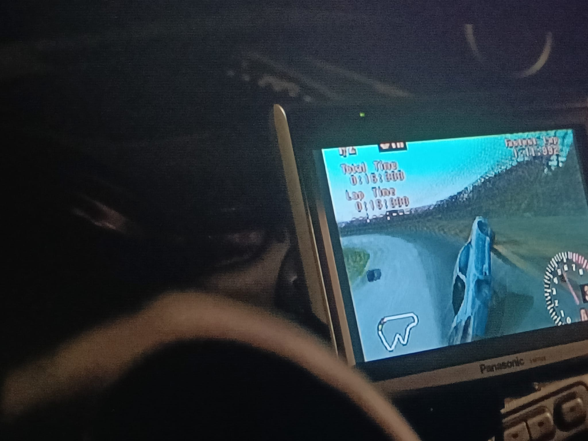
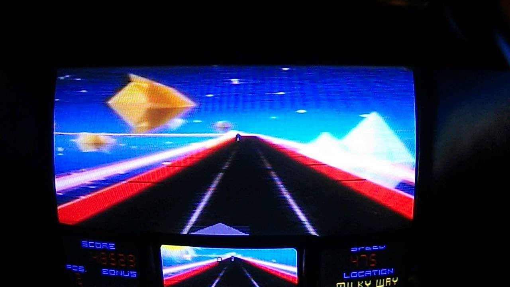
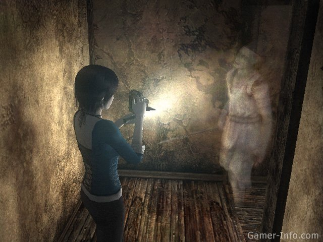
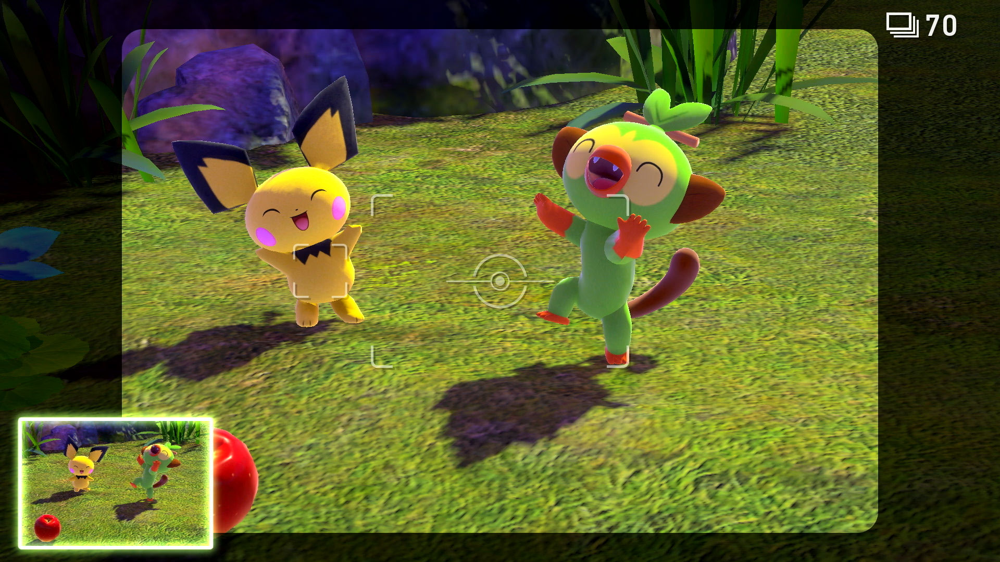
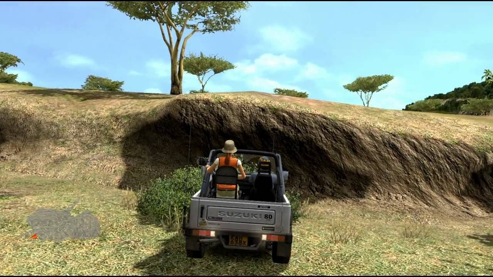
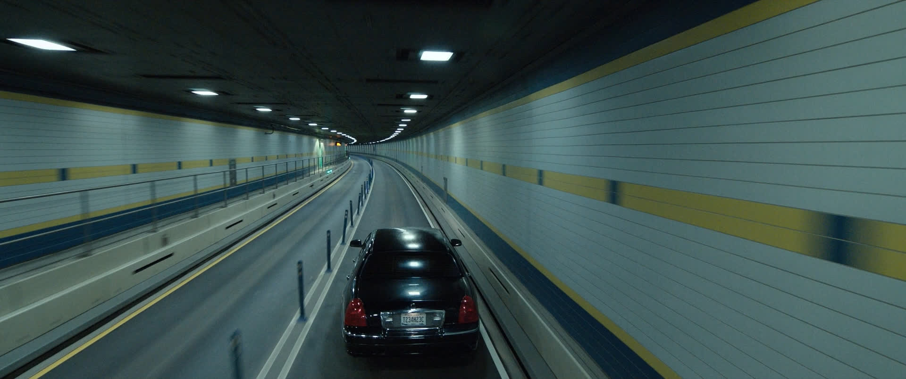

From the soundtrack of Midnight club II (2003):
iiiiiiiiiiiiiiiiiiiii Gearing Up
A few days ago I saw the Gran Turismo movie, a film in which the protagonist levels up from Gran Turismo to becoming a professional race car driver. Based on a true story, we follow Jann Mardenborough through this journey and his gamified perception of the real world. Gran Turismo is a really fun racing game series… I have to add simulation, or sim racing or another way to make clear this is not just a virtual world far from ours, but the real deal! A real reflection of the track! A real driving experience888 Gran Turismo has been committed to making some of the most realistic racing games for the past decades. We have seen sim racing become a real sport, with a lot of the top players being actual real--world race drivers themselves, Max Verstappen being one of them.

A lot of these people train with sim racers just as a lot of other people with dangerous or expensive occupations do.

Screenshot from The Fast and The Furious (2001), street racer gaming before a street race in his car
The Gran Turismo movie was kind of really stupid, but I had a lot of fun watching it. I grew up playing a lot of racing games, as my dad had a past with and love for rally driving. I swear I was in the world top 100 of Asphalt 6 when it came out.
balancing liberal physics
Liberal physics: drifting away from real-world physics in order to have more space for creativity
Liberal physics: laws and tools of capitalism
The term liberal physics is one which covers a lot of the racing game circuit. Lately, the shifter has moved a lot towards realistic/sim racing games since technology allows more realistic representations now. World building with this much real world coverage like driving isn’t as easy as, for example, in a game based on killing. Killing is something that for most part of the population is a purely simulated matter. Most people haven’t seen, let alone committed, a murder. Because of this lack of real world experience, we have less expectations a video game is the reflection of the real world. ]** I want to make clear that this lack of murder is NOT a bad thing*^. The development of technology has raised our expectations that the virtual has to be a reflection of the real world. Digital ethics and homogenous media consumption has influenced us all, making us have an untrustful connection to partial Sci-Fi. Catfishes are bad, non-licensed copies of real cars scammy. Liberal physics tries to balance this by using other liberal physics: getting money for licensing and money for the elite through microtransactions. The relationship we have towards the reflection of the real world in the virtual is a dangerous one.

Sci-Fi arcade racing game Star Rider (1983)
My phone camera has started to mirror my selfies like other iPhones do at the moment. My photos no longer give me the perceptive I have in the mirror, and has been replaced by the POV of an outsider.
Neill Blomkamp also directed CHAPPIE, a super interesting sci fi movie I thoroughly enjoyed. CHAPPIE 🤝 Gran Turismo. Can you imagine it? Has your consciousness changed through AI? Maybe my mind will soon live in a race car. Where would it drive to? I think it would drive to Paris.
As we try to capture the real world within a virtual one, let's look at video game photography practices::::::::: The camera as an aggressive object
Camera's in video's games can be tricky as you are working in a double layered technology. Screen within screen type stuff for example (that's why you see a lot of analog camera's in video games)…. Photographing has always been a somewhat violent practice. Especially street photography has gotten this status because of it’s often not directly consensual nature. A lot of philosophers like Derrida wrote about this, and photographers like Ishiuchi Miyako use this concept within their art. Would it be ethical to bother NPC's with my camera? Maybe it’s a bit rude of me, no? There are some street photography video games like Umurangi Generation (2019), but the aggression of a camera which exists even in the virtual world is best displayed in the video game series Project Zero (Fatal Frame/Zero)(2001-). In the games, you operate numerous photography apparatuses as a weapon to kill or pacify evil spirit, doing more damage when you take it on The Decisive Moment. 100%-50%-20%-peaceful.

I mostly find a lot of hunting related type stuff where you capture the animals with your camera instead of your gun. Pokémon Snap (1999-) being the most harmless of them. You roam an island trying to take as best possible photo’s of Pokémon.

The Japan exclusive Afrika, works in a similar way: an open-world game where you roam the African Sahara desert taking part in Safari exotism getting as close as possible with your 4X4 to grab a few shots. Video games allows us to transfer problematic tendencies onto the virtual worlds. Photographing animals is mild matter, but there are a lot of practices of for example people with real pedophile or cannibalistic urges where video games are able to help.


Virtual tourism doesn’t only exist in the game Afrika, but we have seen a greater focus on exploration grow together with technological capabilities with extremely large open world games such as No Man’s Sky (2016). A camera mode has become an essential for almost all AAA games. Game developers have grown to have a big photographic/cinematographic eye, spawning you in a really aesthetic place on the map in an artsy perspective. Virtual tourism has expanded to the whole industry, with everyone taking photo’s in their games. Virtual photography has grown into a full medium on it’s own with pioneers like Duncan Harris (Dead End Thrills) and Leonardo Sang. Also filmmaking has existed in video games for a very long time, called machinima. As the video game industry surpassed the filmmaking industry, raking in tens of billions of dollars more than the global film industry every year, we have a switch up in roles. The filmmaking industry has been adopting video game tools in order to advance their practice, instead of video games trying to have a really filmic quality because of medium-related insecurities. Cinematography has been influenced with software like CineTracer, allowing you to rebuild your set in the virtual world and testing out shots, but you have started to notice a more direct video game influenced cinematography the past years, with for example static third person car perspectives like in Tár, Drive My Car and Gran Turismo. Also hypertextual play has sneaked into the industry with movies like Black Mirror’s Bandersnatch.

Screenshot from Tár (2022)
Industries are intertwined! I’m sitting in the backseat going on vacation, zoning out right now. Racing games allow me to go into protective bubble floating in our capitalist society. Leonardo Sang offers us a multi-layered contemplation on photography practices within our virtual society. Try to get away from the racing danger and speed of our society please.
Soon I will come with a Machinima special, here is an MTV2 Video Mod made in Need for speed 2: